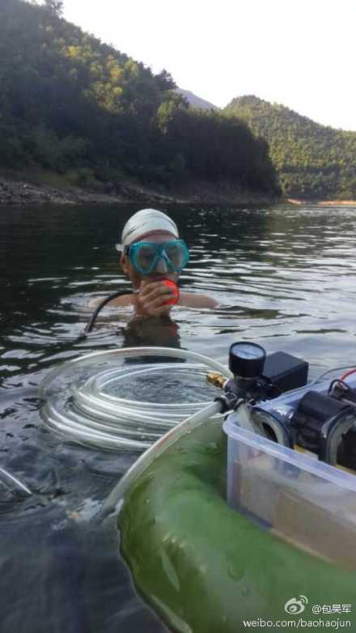

那些年，我们一起追过的偶像
每个人，从生下来到过完青春期之前甚至之后都会有追过很多偶像。有些偶像追着追着觉得老了没意思了，还可以换一个。但有的偶像，那是要追一辈子的。比如你爸，一定特别了不起，对不对？比如你妈，也特别了不起对不对？他们一直都是你的偶像，对不对？但这里我不想说偶爸偶妈这两个偶像，虽然他们是电，他们是光，他们是我的super star。并且偶真的跟他们俩非常像，屁话，亲生的偶能不像么。在这里我要写一写的是我哥，斯密达叫偶巴，但我管他也叫偶像，因为小时候在我和村子里很多小朋友甚至大人的眼里，他简直是个超人，他就是那些年，我们一起追过的偶像。
不是漫画里那个把内裤外穿会飞的超人，但有点儿像。漫画超人表面上的工作是个报社记者，整天西装革履，一旦碰到坏蛋的时候就狠狠地修理他们；我的偶像超人呢现在是卖保险的，穿得比漫画超人只会更光鲜，但是他不会修理坏蛋——他会修理电器。
我看完《乔布斯传》之后就很想写这篇文章，因为我觉得里面的那个史蒂夫·沃兹尼亚克的一个故事，跟偶像超人有点像。沃兹在大学时自己做了一个电磁干扰装置，以此捉弄其他室友——让电视信息时断时续，室友一碰电视天线，马上停止干扰，于是室友就一直拿着天线；过了一会儿又开始干扰，这回室友各种拍打电视机、调整天线方向无果后，偶然抬了一只脚的时候，沃兹松开了口袋里的开关——于是室友们被训练成金鸡独立捧着天线看电视，把沃兹给偷着乐坏了。
偶像上学的时候也研制过类似的设备，跟沃兹的不同，他的那个能给邻居家的电视发送声音信号，于是跟邻居家的孩子约好，让他把频道调好，再请他妈妈过来看电视，然后这边开始学各种鬼哭狼嚎的声音，差点没把阿姨给吓出毛病来…
早些年看过一个硬汉电影，史蒂夫·席格演的，主角到了一个新的警察局上班，里面有班坏警察欺负新人，要跟他比划比划，方法是拿电警棍各电一下，看谁能被电得更久一些，结果主角被阴了一把，电他之前把电压偷偷调到了最高档位。好吧，这个桥段真的好蠢啊…
偶爸偶像是电工的关系，偶巴偶像很小的时候就喜欢摆弄电器。他在上初中的时候就开始自制电棍了。一开始是拿旧的收音机里拆下来的变压器，自己重新绕一下线，加几个三极管等我现在也搞不明白的电子元器件，装到手电筒头上，就成了简易的电棍了，让村里的孩子们崇拜得五体投地（可能主要是害怕）。早期变压器比较小，电压不高的时候，他也拿这个电棍电自己和小弟（不是他自己的小弟弟，也不是我，而是村里的那票把他当偶像崇拜的小弟），敢被电的才能当老二，老三这样子。后来制作工艺改良了，主要是不再从旧收音机上拆变压器，开始从电视机上拆高压包，甚至自己找来大尺寸的硒钢片自己纯手工从头绕了上万匝整整齐齐的漆包线的时候，终于把我震惊了，哥，你不是超人的话哪来这么大的毅力绕这么多圈线啊？于是从此之后，我不再管他叫偶巴，直接叫偶像了。
偶像的高压电棍后来能放出一厘米、二厘米、三厘米的电弧，再也不敢往自己和别的小朋友身上电了，开始电小动物，我了个去，这要是搁现在互联网时代，他非得被人肉出来骂死。比如小青蛙，小鱼儿之类的。通常电着电着小鱼儿身上就被电弧烧个洞出来。但鱼眼晴是烧不出洞的，偶像最后给出这样的实验结论。据他介绍，击穿空气产生3cm的电弧，一般需要一万伏以上的电压。后来他吓唬我说，要在下雨打雷的时候，把电棍接到屋顶接下来的电视机天线上，试试看能不能把雷引到家里来，终于把我吓得当天晚上就尿了床。
高压电棍除了吓唬小朋友之外，有一回还被用来解决了一个非常实际的问题。有个村里人有回拿来一跟长长的电缆找我爸修，中间不知道哪儿断了，舍不得整根扔掉或者一段一段剪开找断在哪。就在我爸也没想到什么办法的时候，我哥挺身而出，说把高压电棍连在电缆的两头，中间断了的地方会产生电弧有噼哩叭啦或者吱吱吱的声音。于是把电缆放在耳边一截一截的听过来，真的找到了断开的地方。So easy！村里人又惊又喜，捧着电缆笑得合不拢嘴。
必须承认，偶像也有非但没解决问题反而帮倒忙的时候。还是上回说的电视机闹鬼的邻居家，这回是伯伯，他是开山的（也就是在山上开采石头），有一回工地交给他一堆撬棒，太钝了让他回个炉敲打敲打把头弄尖一些。伯伯在我们家后门空地上生了炉子烧了半天，撬棒还是没烧红，敲打不动。大家大人小孩都围着看热闹，我爸已经把家里的鼓风机借给伯伯吹炉子了，还是不够热。这时候偶像又挺身而出了，说自己从书上看到过，往炉子里撒一把铁粉和铝粉，能有奇效。于是从村口的五金厂讨来一些铝粉铁屑，撒了一把进去——哇噻，两下就把伯伯的撬棒烧熔掉一截，嗷嗷地往外抢都来不及。伯伯举着撬棒，哭笑不得，围观群众捧着肚子笑得差点躺下打滚。
在变压器之前，偶巴偶像和偶爸偶像还有一个玩具，是从老式手摇电话机上拆下来那个手摇电机，那是个电压能达到七八十伏的直流发电机。接了两根长长的导线，再接上一片铜片，踩在脚底下，当健身器材。据说大名鼎鼎的功夫超人Bruce Lee，就曾经手插电门练出一身好本事。我们家的这个可能电压低了点，所以最后并没有练出什么真功夫来。也可能是因为我们练的时候都是需要自己手摇发电的关系——一旦觉得电得受不了的时候，手上摇得就会慢下来了，对自己不够狠，是吧。为此偶像们提出来要自己踩着铜片，然后让对方来摇发电机——他们的确这么操作过，每次都笑得像两个傻子。但我死活不同意，坚持必须自己发电。没错，作为家中为数不多的胆小怕电的正常人，我这回也曾壮着胆子，拿它电自己练脚力，好像真的有效果，我上初中的时候要骑车过一座桥，每回我都蹬不上去，电了几个疗程以后我就能蹬上去了。还有一次偶像在田里干活回来觉得累坏了，腿都软了，拿起发电机就开始摇电，突然腿肚子上血流如注，原来一条蚂蝗一直咬着吸血呢，这一电蚂蝗好像被电晕了掉在地上装死，偶像自己因为被电得舒筋活血，可不止都止不住咋地。这下可把偶像气坏了，这家伙不知道从哪儿拿出来一小瓶高锰酸钾，撒了点在那条蚂蝗身上，哎呀我去，我从没见过蚂蝗吸完血还能这么痛快地吐血的惨烈景像。简直让我想起周星驰唐伯虎点秋香里那个对对子失败躺在地上吐血的对穿肠老兄。那条蚂蝗本来吸足了血肥肥胖胖的有点像郭德纲罗永浩的，可怜最后吐完了血那个瘦的哟，变成蚂三立了。
后来偶像又拿来一个一样的手摇电机，把里面的线圈重绕了，变成了低压发电机，接两根导线和一个手电珠子，就变成了一个不用买电池的手摇式电筒，非常好用，一边走一边摇，想亮点儿就手上加把劲摇得快一点，累了摇慢一点就变暗了。唯一的缺点是比较吓人，走夜路的时候碰到个人常常会跟我们说，你们这个手电太吓人了，忽明忽暗远远地还以为是鬼火飘过来了哩。
很庆幸的是，在很多起诸如电解水自制氢气就为点炸听一声响，好得快罐装酒精自制燃烧瓶等系列危险实验之后，偶像和我都平安无事的长大成人并没有弄死弄残或者把家烧掉。考大学的时候偶像阴差阳错没有能考工科成为一个电子工程师，而是读了保险专业，但这一点也没影响他继续追求自己的超人手艺。
比如他爱上了潜水后，虽然没有住在海边，却自己做了个气泵，到水库里潜去了，光秃秃黑洞洞除了石头和泥没啥好看的，但他却乐此不疲。下图是他带我去潜水时给我拍的照片，被我拿来发到微博上装B😈。 
下图是他水库潜水抓回来吃掉的河蚌（以下多图盗自他的朋友圈）：
下图是他自制的高亮度手电筒：
淘宝上买来的各种电池：
他的工具箱里的各种钳子（有几把剪刀乱入）：
下班发现家里停电后却幸灾乐祸：
自己动手修电动牙刷：
买不起电动牙刷头了怎么办（不能否认有时候我觉得我偶像是个很屌很屌的屌丝）：
热熔胶的妙用：
给他老丈人买的坚果手机（旁边黑的是他媳妇儿的T1，两款手机都是找我这个锤子科技员工帮忙买的😈）：
对了，偶像发朋友圈的时候还要899元，现在这款坚果手机直降200元，京东商城现货发售🌝。
回家过年，可以带一部锤子科技出品的坚果手机送给你最爱的那两个偶像，这样你就可以用另一部锤子科技出品的手机（T系列或坚果），通过其内建的远程协助功能，随时随地帮助他们解决使用手机过程中的问题了。不对，应该是两部，两个偶像一人一部，省得争了，也不枉你追了他们那么多年，是吧。

{kind=link}
{kind=link}
{kind=link}
{kind=link}
{kind=link}
{kind=link}
{kind=link}
{kind=link}
{kind=link}
{kind=link}